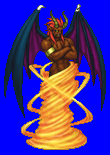
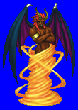
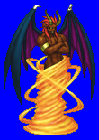
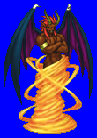

Height: ??? Weight: ???
Habitat: Desert Origin: Middle East
Meaning: Proper name of a type of djinn, from Arab myth
Efreet is a djinn from Arab mythology that resides in the holy city of brass. Of the five classes of djinn, Efreet are the second-strongest. It is insubstantial like smoke, but can coalesce into solid form when the need arises. Efreet possesses powerful magic as befits its status as a powerful spirit. In games, Efreet are usually summoned by the heroes or are fire-based monsters.